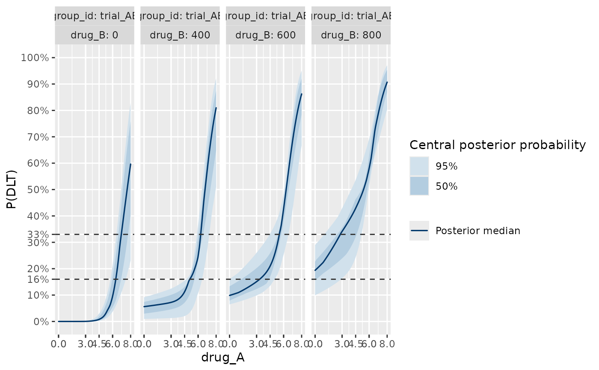
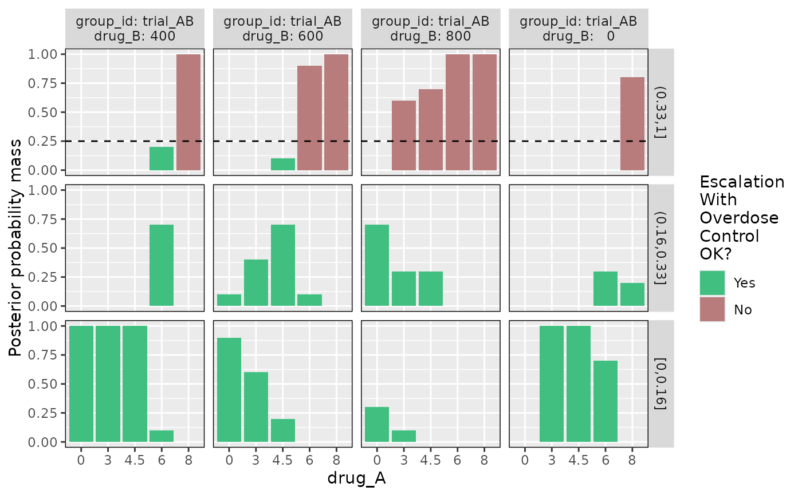
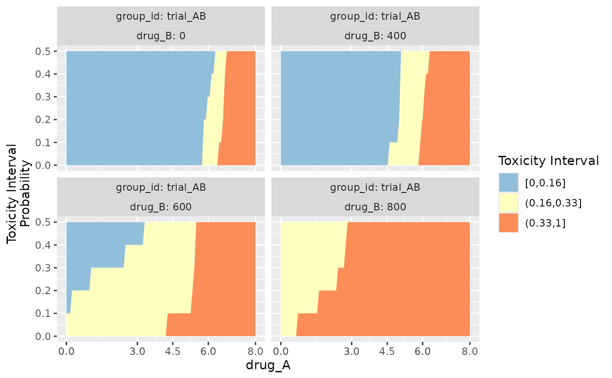
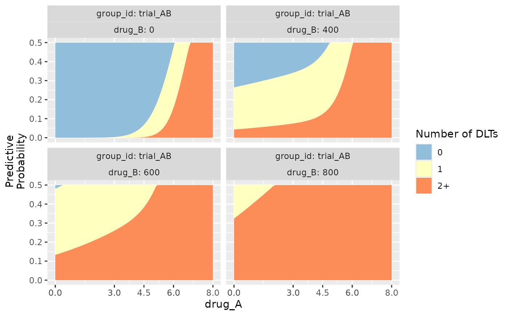

Warning: these methods are at an experimental stage of development, and may change with future releases.
Plotting methods for blrmfit and blrm_trial objects.
Usage
plot_toxicity_curve(object, ...)
plot_toxicity_intervals(object, ...)
plot_toxicity_intervals_stacked(object, ...)
# S3 method for class 'blrmfit'
plot_toxicity_curve(
object,
newdata,
x,
group,
xlim,
ylim,
transform = TRUE,
prob = 0.5,
prob_outer = 0.95,
size = 0.75,
alpha = 1,
facet_args = list(),
hline_at = c(0.16, 0.33),
grid_length = 100,
...
)
# S3 method for class 'blrm_trial'
plot_toxicity_curve(
object,
newdata,
x,
group,
xlim,
ylim,
transform = TRUE,
prob = 0.5,
prob_outer = 0.95,
size = 0.75,
alpha = 1,
facet_args = list(),
hline_at,
grid_length = 100,
ewoc_shading = TRUE,
...
)
# S3 method for class 'blrmfit'
plot_toxicity_intervals(
object,
newdata,
x,
group,
interval_prob = c(0, 0.16, 0.33, 1),
interval_max_mass = c(NA, NA, 0.25),
ewoc_colors = c("green", "red"),
facet_args = list(),
...
)
# S3 method for class 'blrm_trial'
plot_toxicity_intervals(
object,
newdata,
x,
group,
interval_prob,
interval_max_mass,
ewoc_colors = c("green", "red"),
...
)
# S3 method for class 'blrmfit'
plot_toxicity_intervals_stacked(
object,
newdata,
x,
group,
xlim,
ylim = c(0, 0.5),
predictive = FALSE,
transform = !predictive,
interval_prob,
grid_length = 100,
facet_args = list(),
...
)
# S3 method for class 'blrm_trial'
plot_toxicity_intervals_stacked(
object,
newdata,
x,
group,
xlim,
ylim = c(0, 0.5),
predictive = FALSE,
transform = !predictive,
interval_prob,
grid_length = 100,
ewoc_shading = TRUE,
facet_args = list(),
...
)Arguments
- object
fitted model object
- ...
currently unused
- newdata
optional data frame specifying for what to predict; if missing, then the data of the input model
objectis used. Ifobjectis ablrmfitobject,newdatadefaults to thedataargument. Ifobjectis ablrm_trial, it defaults tosummary(object, "dose_info").- x
Character giving the parameter name to be mapped to the x-axis. This also supports 'tidy' parameter selection by specifying
x = vars(...), where...is specified the same way as indplyr::select()and similar functions. Examples of usingxin this way can be found in the examples. Forblrm_trialmethods, it defaults to the first entry insummary(blrm_trial, "drug_info")$drug_name.- group
Grouping variable(s) whose levels will be mapped to different facets of the plot.
groupcan be a character vector, tidy parameter(s) of the formgroup = vars(...), or a formula to be passed directly toggplot2::facet_wrap(). Forblrm_trialmethods, it defaults togroup_id, plus all entries ofsummary(blrm_trial, "drug_info")$drug_nameexcept the first, which is mapped tox.- xlim
x-axis limits
- ylim
y-axis limits on the probability scale
- transform
logical (defaults to
FALSE) indicating if the linear predictor on the logit link scale is transformed withinv_logitto the 0-1 response scale.- prob
central probability mass to report for the inner ribbon, i.e. the quantiles
0.5-prob/2and0.5+prob/2are displayed.- prob_outer
central probability mass to report for the outer ribbon, i.e. the quantiles
0.5-prob/2and0.5+prob/2are displayed.- alpha, size
Arguments passed to geoms. For this plot,
alphais passed toggplot2::geom_ribbon(), andsizeis passed toggplot2::geom_line().- facet_args
A named list of arguments (other than
facets) passed toggplot2::facet_wrap().- hline_at
Location(s) of horizontal guide lines (passed to
bayesplot::hline_at()).- grid_length
Number of grid points within
xlimfor plotting.- ewoc_shading
logical indicates if doses violating EWOC should be shaded in gray. Applies only to
blrm_trialmethods. Defaults toTRUE.- interval_prob
defines the interval probabilities reported in the standard outputs. Defaults to
c(0, 0.16, 0.33, 1), whenpredictive = FALSEand/ortransform = TRUE, or to intervals giving 0, 1, or 2+ DLTs whenpredictive = TRUEandtransform = FALSE. Forblrm_trialmethods, this is taken fromsummary(blrm_trial, "interval_prob")by default.- interval_max_mass
vector defining for each interval of the
interval_probvector a maximal admissible probability mass for a given dose level. Whenever the posterior probability mass in a given interval exceeds the threshold, then the Escalation With Overdose Control (EWOC) criterion is considered to be not fulfilled. Dose levels not fulfilling EWOC are ineligible for the next cohort of patients. The default restricts the overdose probability to less than 0.25. Forblrm_trialmethods, this is taken fromsummary(blrm_trial, "interval_max_mass")by default.- ewoc_colors
Fill colors used for bars indicating EWOC OK or not. Vector of two characters, each of which must correspond to
bayesplot::bayesplot-package()color schemes (see?[bayesplot::color_scheme_get()][bayesplot::color_scheme_get])- predictive
logical indicates if the posterior predictive is being summarized. Defaults to
FALSE.
Value
A ggplot object that can be further
customized using the ggplot2::ggplot2() package.
Details
plot_toxicity_curve plots continuous profiles of the dose-toxicity curve.
plot_toxicity_intervals plots the posterior probability mass in
subintervals of \([0,1]\), at a discrete set of provisional doses.
plot_toxicity_intervals_stacked is similar to
plot_toxicity_intervals, but over a continuous range of doses.
Examples
## Setting up dummy sampling for fast execution of example
## Please use 4 chains and 100x more warmup & iter in practice
.user_mc_options <- options(
OncoBayes2.MC.warmup = 10, OncoBayes2.MC.iter = 20, OncoBayes2.MC.chains = 1,
OncoBayes2.MC.save_warmup = FALSE
)
example_model("combo2", silent = TRUE)
#> Warning: The largest R-hat is NA, indicating chains have not mixed.
#> Running the chains for more iterations may help. See
#> https://mc-stan.org/misc/warnings.html#r-hat
#> Warning: Bulk Effective Samples Size (ESS) is too low, indicating posterior means and medians may be unreliable.
#> Running the chains for more iterations may help. See
#> https://mc-stan.org/misc/warnings.html#bulk-ess
#> Warning: Tail Effective Samples Size (ESS) is too low, indicating posterior variances and tail quantiles may be unreliable.
#> Running the chains for more iterations may help. See
#> https://mc-stan.org/misc/warnings.html#tail-ess
# Plot the dose-toxicity curve
plot_toxicity_curve(blrmfit,
x = "drug_A",
group = ~ group_id * drug_B,
newdata = subset(dose_info_combo2, group_id == "trial_AB"),
facet_args = list(ncol = 4)
)
#> Warning: Using `size` aesthetic for lines was deprecated in ggplot2 3.4.0.
#> ℹ Please use `linewidth` instead.
#> ℹ The deprecated feature was likely used in the OncoBayes2 package.
#> Please report the issue at <https://github.com/Novartis/OncoBayes2/issues>.

# Plot posterior DLT-rate-interval probabilities at discrete dose levels
plot_toxicity_intervals(blrmfit,
x = "drug_A",
group = ~ group_id * drug_B,
newdata = subset(dose_info_combo2, group_id == "trial_AB")
)

# Plot posterior DLT-rate-interval probabilities over continuous dose
plot_toxicity_intervals_stacked(blrmfit,
x = "drug_A",
group = ~ group_id * drug_B,
newdata = subset(dose_info_combo2, group_id == "trial_AB")
)

# Plot predictive distribution probabilities over continuous dose
plot_toxicity_intervals_stacked(blrmfit,
x = "drug_A",
group = ~ group_id * drug_B,
predictive = TRUE,
interval_prob = c(-1, 0, 1, 6),
newdata = transform(
subset(
dose_info_combo2,
group_id == "trial_AB"
),
num_patients = 6,
num_toxicities = 0
)
)

## Recover user set sampling defaults
options(.user_mc_options)